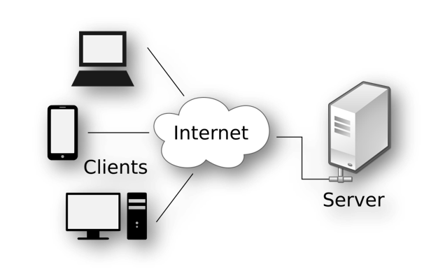

Chapitre 2 Les technologies web 1.0 vs web 2.0
Les tâches d’exploration des données web (web maning en anglais) font généralement face à deux types de sites web. Il s’agit des sites web statiques basés sur le web 1.0 et les sites web dynamiques basés sur la technologie web 2.0 .
2.1 Le web 1.0 : le web statique
2.1.1 La communication web client-serveur
L’ensemble des technologies web sont étroitement liées au modèle client-serveur(HTTP). Dans un modèle client-serveur, les tâches du système sont réparties entre les fournisseurs d’une ressource (documents, données, images, …), appelés serveurs, et les demandeurs de cette ressource, appelés clients. Dans le world wide web, les clients les plus courants sont les navigateurs web et les serveurs les plus courants sont les serveurs web hébergeant des sites web.
Par exemple sur l’image ci-dessous, on peut voir les clients à gauche qui communiquent avec le serveur à droite sur l’internet et à travers du http.

Ainsi, un aspect clé du web scraping est de savoir comment contrôler (et automatiser) le côté client des intéractions client-serveur. Autrement dit, nous devons comprendre comment la communication client-serveur fonctionne essentiellement du point de vue du client. En terme clair, comment fonctionne le http.
2.1.2 HTTP : règles de communication web
Le protocole HTTP est une norme très courante qui guide l’échange de documents sur le web et qui est pertinente pour le web scraping. En principe, HTTP est un ensemble de conventions qui définissent comment la communication entre le client et le serveur démarre et s’arrête, à quoi ressemblent les requêtes d’un client et les réponses du serveur, ainsi que le fonctionnement de l’authentification des utilisateurs (clients) pour les documents à accès restreint.
La méthode HTTP la plus simple est la requête GET utilisée par un client pour demander simplement à un serveur d’envoyer une page web spécifique. Une requête GET typique pour obtenir la page des formations offertes par l’UNIVERSITE CLERMONT AUVERGNE pourrait ressembler à ceci :
GET /formation/nos-formations/
par-ufr-ecoles-et-instituts HTTP/1.1
Host: www.uca.frLa première ligne est la ligne de requête indiquant ce que le client veut faire, GET : – /formation~~par-ufr-ecoles représente le chemin et – HTTP/1.1 la version du protocole. La deuxième ligne Host: www.uca.fr et les lignes suivantes constituent les en-têtes HTTP, indiquant au serveur le nom d’hôte du site web où se trouve le document demandé.
Si tout se passe bien avec la requête, la réponse HTTP du serveur commencerait alors par :
HTTP/1.1 200 OK
Content-Type: text/htmlLa première ligne est la ligne d’état, elle indique le protocole utilisé par le serveur, puis le code d’état de la réponse (ici 200) et un message de statut (ici OK). La deuxième ligne donne le type de contenu de la réponse. Les en-têtes de réponse sont utiles pour interpréter le corps de la réponse par le navigateur. Ainsi, connaitre les codes d’état de réponse HTTP et les types de contenus de réponse est donc très utile et peut aider le web scraper à automatiser l’extraction. Voici une liste des codes d’état HTTP et leur signification.
Une autre méthode HTTP couramment utilisée est la requête POST qui permet au navigateur d’envoyer des informations à un serveur. Les requêtes POST sont souvent utilisées lors de la soumission d’un formulaire HTML sur une page web. Par exemple, si nous voulons nous connecter à une page web avec un contenu protégé, comme la page Facebook personnelle, nous sommes invités à entrer un nom d’utilisateur et un mot de passe. Lorsque nous appuyons sur le bouton Connexion, nous envoyons une requête POST qui ressemble à ceci :
POST /login.php HTTP/1.1
Host: www.facebook.com
..
email=username@example.com&pass=12345